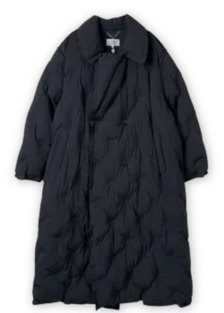
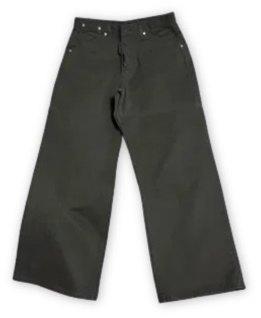
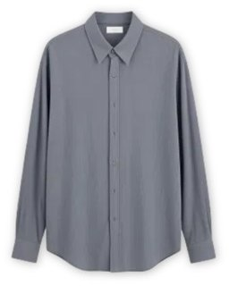
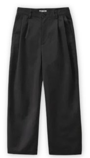
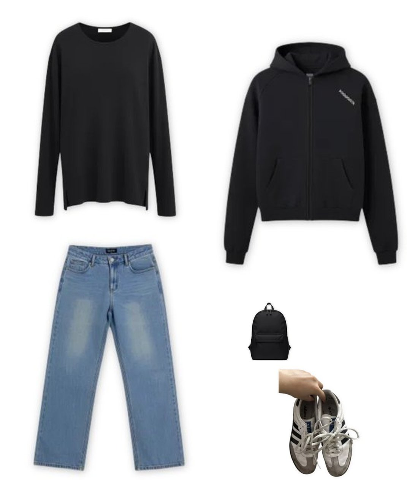
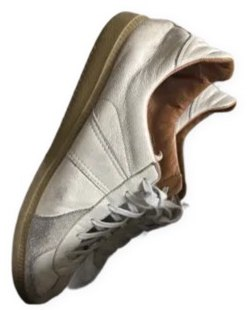

추천
더니트컴퍼니 라이트그레이 니트 + 메종 마르지엘라 블랙 퀼팅 코트
라이트그레이 니트, 차콜 바지, 블랙 코트로 명도만 바꾼 무채색 그라데이션이에요. 한 색 계열 안에서 깊이와 소재감을 달리하는 게 미니멀 모노톤 출근룩의 기본이라, 단정하면서도 밋밋하지 않아요. 퀼팅 코트는 비를 털어내기 쉽고 실내에선 벗어 두기 편해요.

니트더니트컴퍼니 라이트그레이 니트얼굴 쪽을 밝혀 주는 밝은 그레이라 어두운 코트 안에서 답답해 보이지 않아요.

코트메종 마르지엘라 블랙 퀼팅 코트가볍게 보온되고 겉감이 비에 강해 오후 비에도 부담 없어요.

긴바지어나더 오피스 차콜 와이드 긴바지와이드 핏이라 오래 서 있어도 편하고, 차콜이 니트와 코트 사이를 이어 줘요.

구두DR. MARTENS 블랙 레더 구두가죽이라 빗길에도 괜찮고 단정함을 지켜 줘요.

크로스백생로랑 블랙 나일론 크로스백나일론이라 비 맞아도 괜찮아요. 접이식 우산을 넣어 가세요.

대안
파브레가 그레이 셔츠 + ART IF ACTS 블랙 브이넥 니트 + RECTO 블랙 레더 재킷
셔츠 깃을 브이넥 니트 위로 꺼낸 레이어드에 레더 재킷을 더해 결이 다른 버전이에요. 블랙·그레이만 쓰고 가죽과 니트의 질감 차이로 포인트를 줬어요. 레더는 비를 닦아내기 쉬워요.

셔츠파브레가 그레이 셔츠칼라만 살짝 보이게 니트 안에 받쳐 입어요.

니트ART IF ACTS 블랙 브이넥 니트브이넥이라 셔츠 칼라가 깔끔하게 드러나요.

재킷RECTO 블랙 레더 재킷짧은 기장이라 출퇴근 길에 움직이기 편해요.

긴바지블랭크룸 블랙 와이드 긴바지블랙 와이드로 상의와 같은 톤을 이어요.

스니커즈투스페이스 블랙 레더 스니커즈가죽 스니커즈라 비에도 괜찮고 레더 재킷과 소재가 맞아요.

백팩YOUTH 블랙 백팩우산과 소지품을 넉넉히 넣을 수 있어요.

대안
포인트 네이비: POTTERY 화이트 스트라이프 셔츠 + STONE ISLAND 네이비 니트 집업
네이비 하나만 포인트로 넣은 버전이에요. 화이트 셔츠와 차콜 슬랙스 사이에 네이비 니트 집업을 걸쳐 단정하고, 실내에선 지퍼를 열어 체온을 맞추기 쉬워요.

셔츠POTTERY 화이트 스트라이프 셔츠잔잔한 스트라이프라 니트 집업 사이로 깔끔하게 보여요.

니트 집업STONE ISLAND 네이비 니트 집업코트보다 가벼워 15° 낮 기온에 알맞아요.

정장바지블랭크룸 차콜 투턱 정장바지투턱 차콜 슬랙스로 격식을 한 단계 올려요.

로퍼HARUTA 블랙 페니 로퍼가죽 페니 로퍼라 비에도 괜찮고 슬랙스와 잘 맞아요.
크로스백생로랑 블랙 나일론 크로스백나일론이라 비 맞아도 괜찮아요.

옷장 자동 조합
MINAV 블랙 긴팔 티 + JUNNE 블랙 후드 집업
같은 날씨와 격식 기준(무채색 위주, 포인트 컬러는 하나까지)으로 옷장에서 자동으로 고른 조합이에요.

옷장 자동 조합
POTTERY 블루그레이 셔츠 + SYSTEM HOMME 블랙 핀스트라이프 블레이저
같은 날씨와 격식 기준(무채색 위주, 포인트 컬러는 하나까지)으로 옷장에서 자동으로 고른 조합이에요.

옷장 자동 조합
ZAVANAS 화이트 긴팔 티 + 폴로 랄프 로렌 블랙 후드 집업
같은 날씨와 격식 기준(무채색 위주, 포인트 컬러는 하나까지)으로 옷장에서 자동으로 고른 조합이에요.

긴팔 티ZAVANAS 화이트 긴팔 티
후드 집업폴로 랄프 로렌 블랙 후드 집업
긴바지블랭크룸 블랙 와이드 긴바지

스니커즈아이보리 레더 스니커즈
크로스백생로랑 블랙 나일론 크로스백